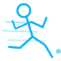
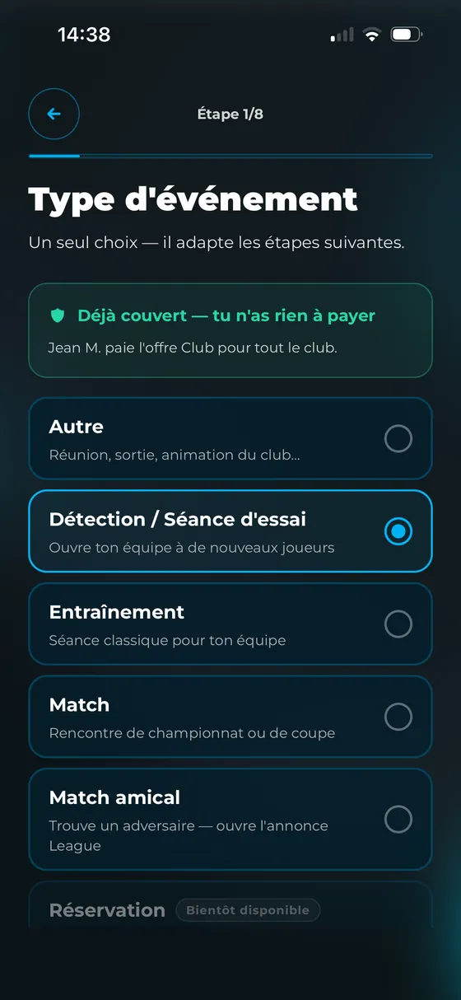
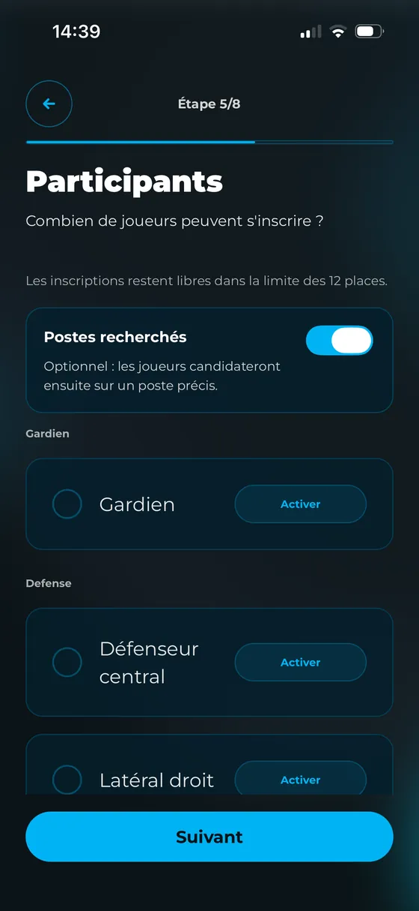
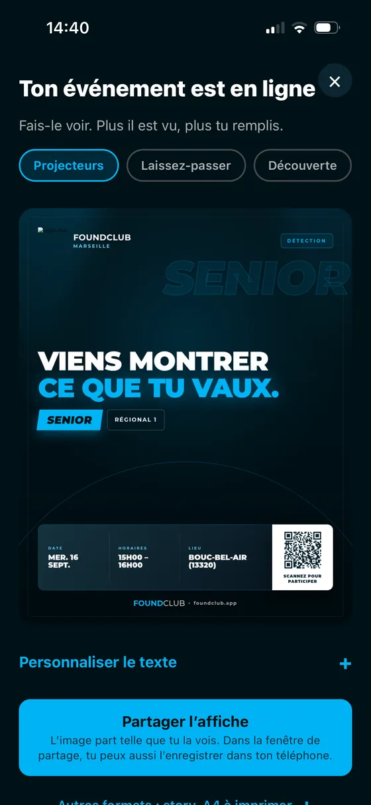
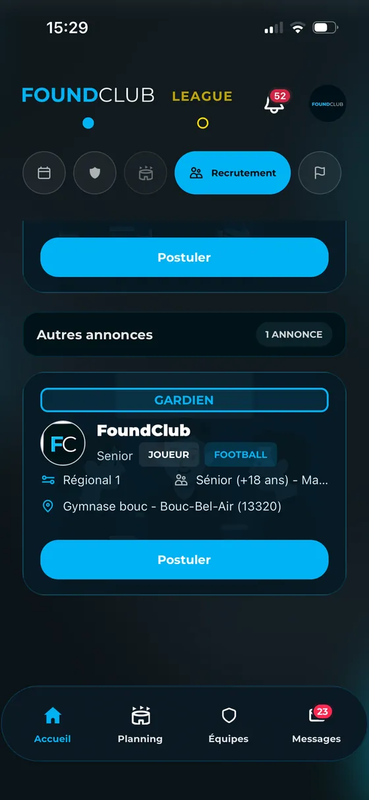

Premier événement offertRecrutez vos prochains joueurs
Organisez une détection ou une séance d'essai : postes recherchés, nombre de places. Publiez une annonce pour trouver un joueur, ou l'entraîneur qui vous manque.
L'application fabrique l'affiche de votre détection, avec son QR code, à coller au club-house ou à partager.
Postes proposés en football, basket, handball, volley et rugby.



L'affiche, avec son QR code, à coller au club-houseen post, story et A4

Côté club, chaque poste affiche ses places et ses candidatures